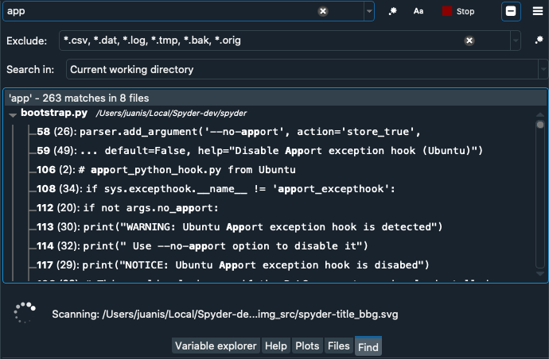
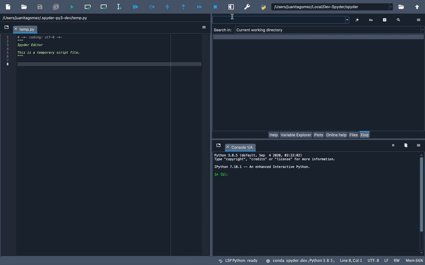
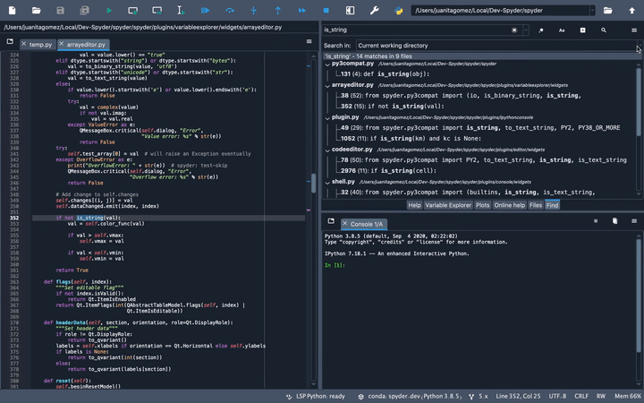
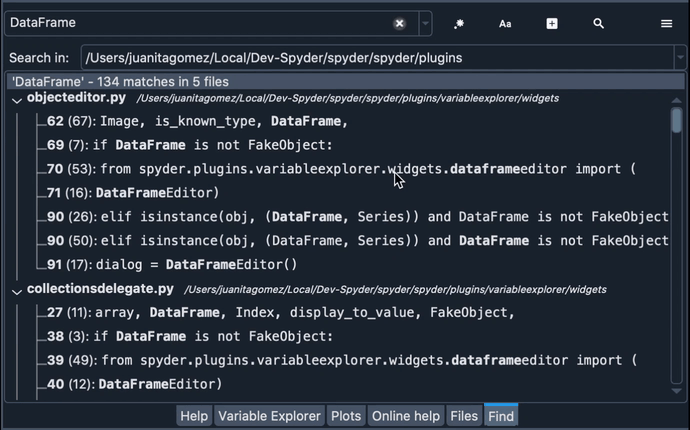
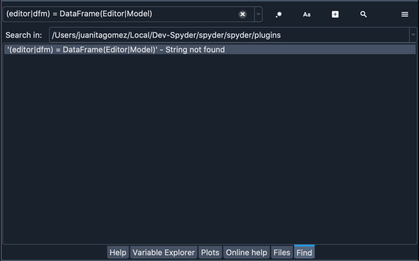
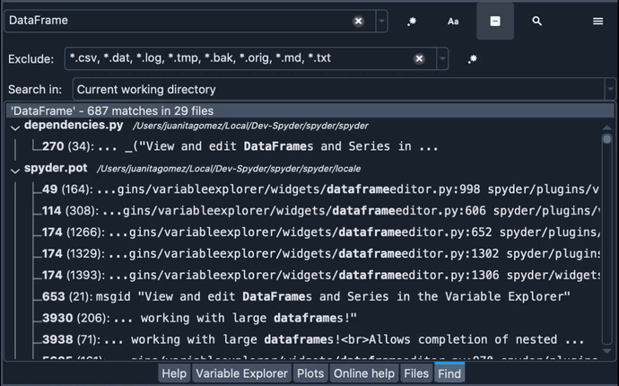
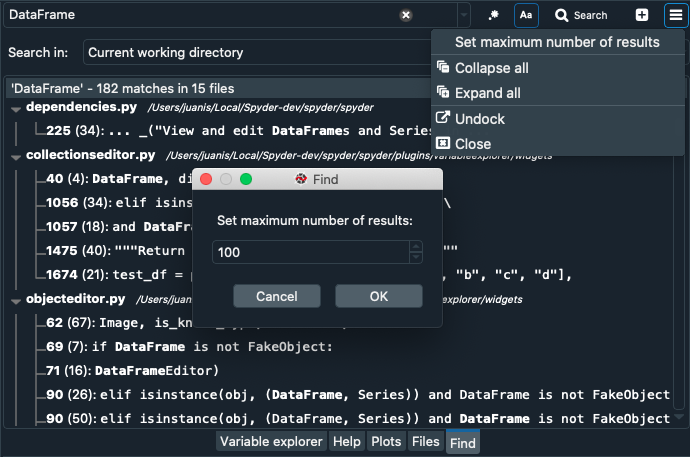

Buscar#
El panel Buscar te permite buscar el contenido de los archivos de texto en una ubicación definida por el usuario, con características avanzadas para filtrar tus resultados.
Usar el panel Buscar#
Para buscar texto en el panel Buscar, ingrésalo en el campo de la parte superior izquierda y pulsa el botón de búsqueda. Esto te permitirá ver y navegar a través de todas las ocurrencias de tu texto de búsqueda en el directorio de trabajo. Puedes expandir o contraer los resultados de la búsqueda para ver los resultados en cada archivo. Al hacer clic en una coincidencia se abrirá automáticamente el archivo y se resaltará la línea donde se encontró el texto.
Si quieres cambiar el alcance de tu búsqueda, selecciona otro directorio, proyecto o archivo en el menú Buscar . Las ubicaciones que selecciones para tu búsqueda se almacenarán en la lista para poder acceder fácilmente a ellas en el futuro. Para borrar todos estos directorios guardados selecciona la opción Limpiar la lista en el menú desplegable en el campo Buscar en.
Elegir opciones de búsqueda#
Puedes seleccionar entre una serie de opciones para permitir búsquedas tan amplias o refinadas como necesites.
Para habilitar la sensibilidad a mayúsculas, que solo devuelve coincidencias con una mayúscula idéntica al texto de búsqueda, activa el botón Aa.
Para analizar tu cadena de búsqueda como una expresión regular, activa el botón .*.
Para excluir ciertos nombres de archivos, extensiones o directorios de su búsqueda, haz clic en el botón Plus para mostrar las opciones avanzadas para el panel, y luego introdúcelas en el cuadro de texto Exclude.
Finalmente, para cambiar el número de coincidencias mostradas, selecciona la opción Establecer número máximo de resultados en el menú Opciones del panel en la parte superior derecha.
